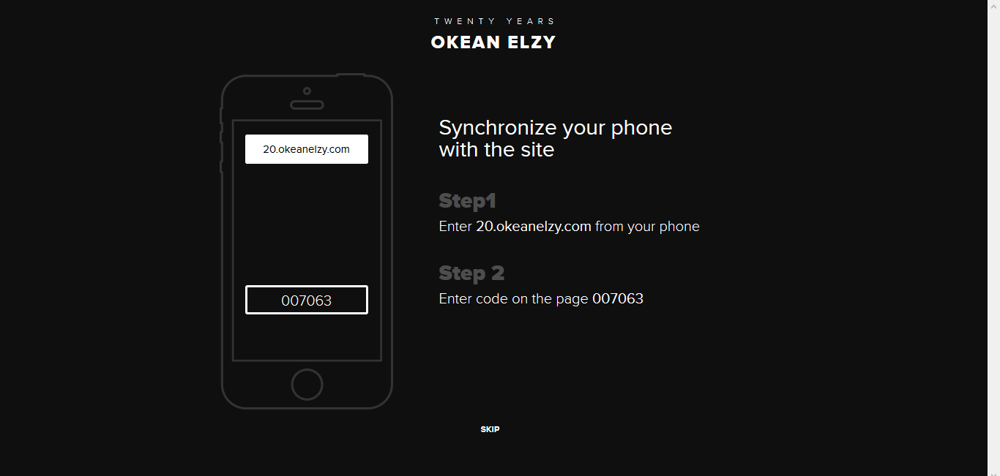
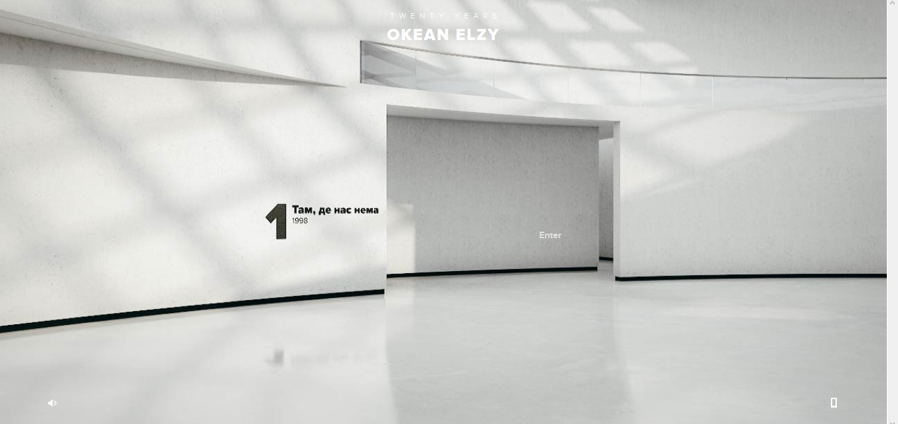
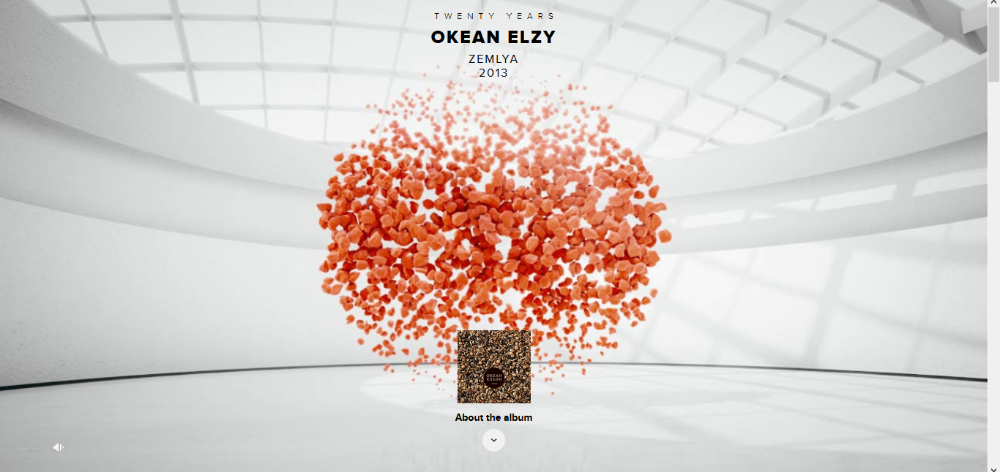
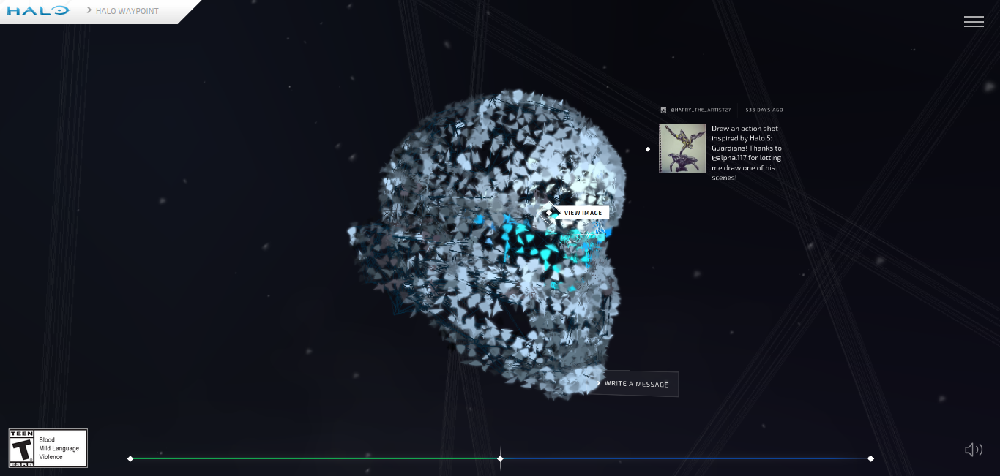
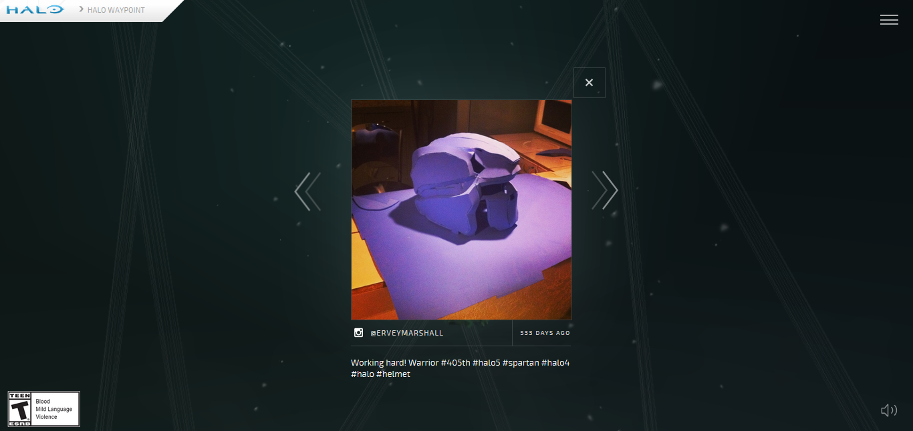

This website connects to your phone. Once connected, you can navigate the site through your phone or with the mouse. It is set up to look like a museum that you can explore different rooms. In each room is a piece of art that give details about the band's albums, members and more.
  The Halo website uses animations when you hover over certain parts. When the page loads, pieces come together to form a helmet. When you hover over the helmet, the pieces become interactive. Each is a social media mention of the game. When clicked on, it is easy to navigate using the arrows to go forward and backward and the "x" to close the window.
 